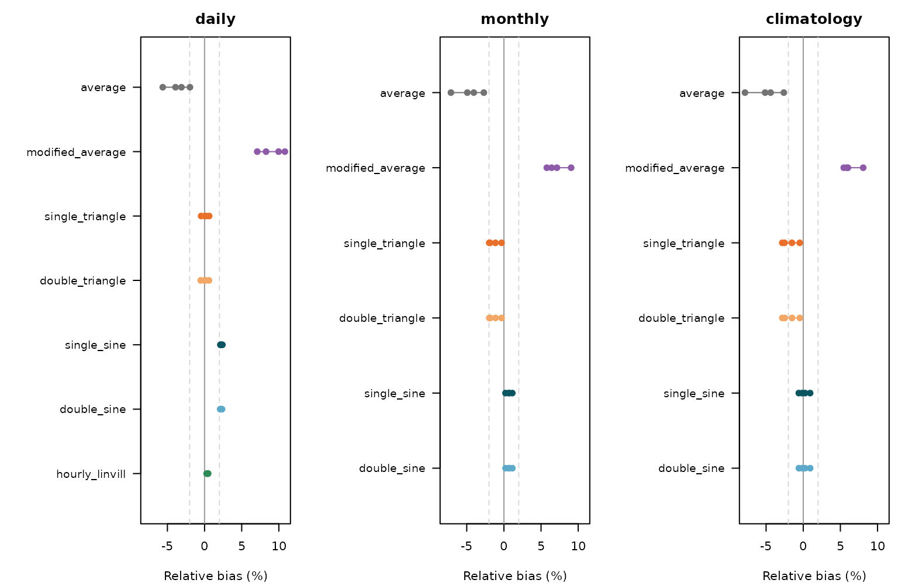
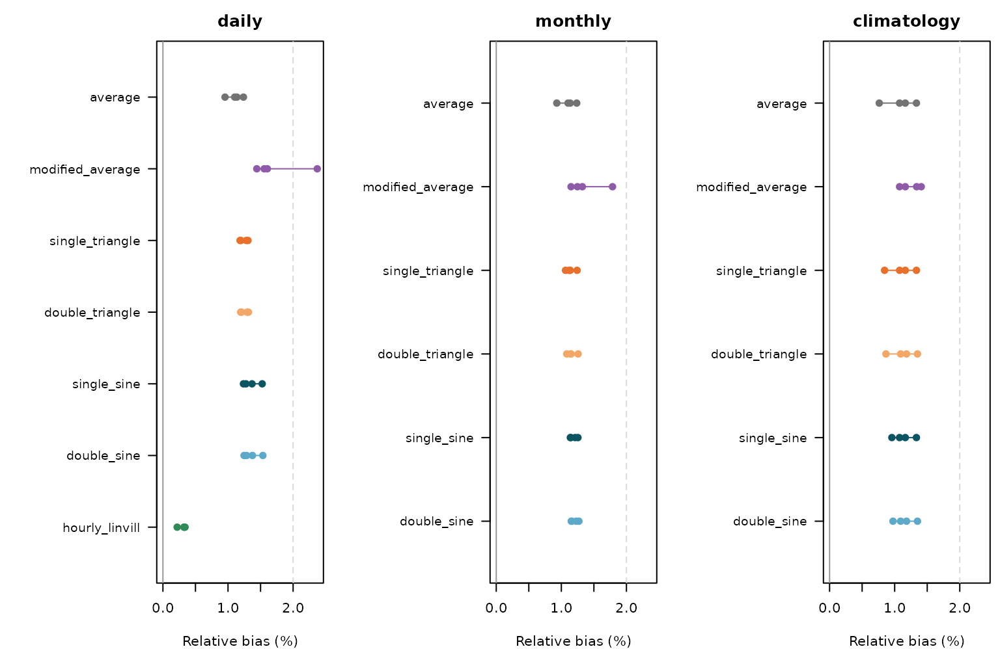
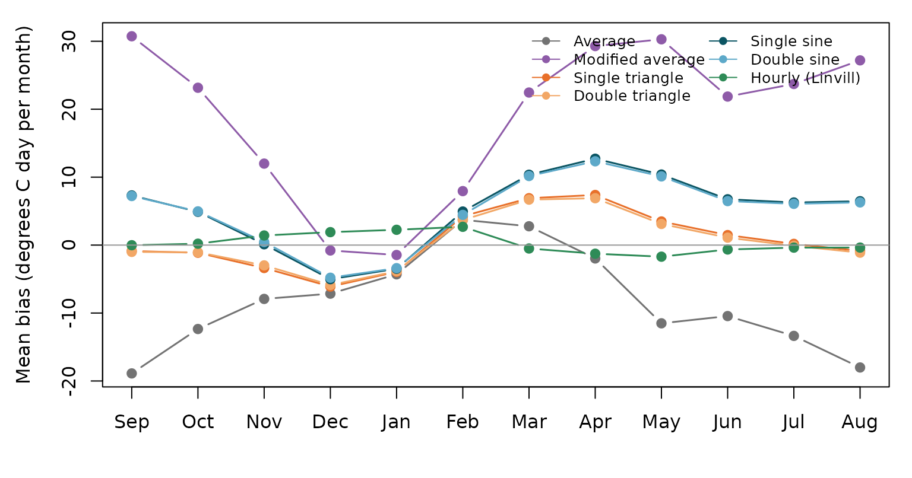

Degree-day methods compared on synthetic temperatures
Source:vignettes/articles/gdd-synthetic.Rmd
gdd-synthetic.RmdThese temperatures are synthetic. They are simulated from real monthly normals (WorldClim 2.1 at 30 arc-seconds) at four sites in the Maule Region, but the daily and hourly values are generated. The experiment measures how much error each method adds under known, controlled conditions. It does not replace validation against observed station records.
Update: observed data. The validation with 30 CEAZA-Met stations in semi-arid north-central Chile (article) found daily cycles more skewed than the generator below assumes: with long cool nights the daily mid-range is about 0.9 degrees C above the true daily mean, so every daily method overestimated degree-days and the averaging method was the closest. Read the ranking of methods on this page as specific to the synthetic diurnal shape.
Question
Most agroclimatic studies do not have hourly temperature. They have daily extremes from a station, or monthly climatologies such as WorldClim. How much error does each degree-day method add in each case?
Design
The script data-raw/gdd-synthetic/run.R reproduces every
number on this page (seed 20261119, about 10 seconds).
- Sites. Four WorldClim 2.1 cells in the Maule Region: coast (Chanco area, 69 m), coastal dryland (Cauquenes, 157 m), central valley (Talca area, 98 m) and Andean foothills (480 m).
-
Daily extremes. The monthly normals densified with
pchip_mp, plus day-to-day anomalies (first-order autoregressive, lag-1 correlation 0.7, standard deviation 2.8 degrees C for the maximum and 2.0 for the minimum, correlated shocks) and a yearly anomaly. 31 years per site. - Hourly “truth”. The Parton & Logan (1981) diurnal model: a sine by day with the maximum lagging solar noon, an exponential decay at night towards the next minimum, plus autocorrelated hourly noise. This shape is deliberately not the sine, triangle or Linvill profile assumed by the methods under test, so none of them matches the generator by construction.
- Reference. Degree-hours / 24 from the hourly series.
-
Estimates at three levels, as in
vignette("validation"):- daily: the daily minimum and maximum of the hourly series with each daily method, and the Linvill hourly reconstruction;
-
monthly: each year’s monthly means of those
extremes, densified with
pchip_mp, then each daily method; - climatology: the 30-year mean monthly extremes, densified once and compared with every year.
- Metrics for the heat season (1 September - 30 April), 30 seasons per site: bias, mean absolute error and relative bias.
The simulated monthly means stay within 0.4 degrees C of the WorldClim normals; the daily maximum occurs around 13:00 and the minimum around 06:00.
Results: base 10 degrees C

Each method has three rows, one per level of information; each symbol is a site and the line spans the four sites. The grey band marks ±2 %. Methods are ordered by their bias with daily extremes.
| method | coast | dryland | valley | foothills |
|---|---|---|---|---|
| average | -3.9 | -3.1 | -2.0 | -5.6 |
| modified_average | +10.0 | +8.3 | +7.1 | +10.8 |
| single_triangle | +0.0 | +0.2 | +0.6 | -0.5 |
| double_triangle | -0.0 | +0.2 | +0.6 | -0.5 |
| single_sine | +2.4 | +2.1 | +2.2 | +2.3 |
| double_sine | +2.4 | +2.1 | +2.1 | +2.2 |
| hourly_linvill | +0.3 | +0.4 | +0.4 | +0.5 |
| method | coast | dryland | valley | foothills |
|---|---|---|---|---|
| average | -4.9 | -4.1 | -2.7 | -7.1 |
| modified_average | +7.1 | +6.4 | +5.8 | +9.0 |
| single_triangle | -1.9 | -1.1 | -0.3 | -2.0 |
| double_triangle | -1.8 | -1.1 | -0.3 | -2.0 |
| single_sine | +0.2 | +0.7 | +1.1 | +0.7 |
| double_sine | +0.2 | +0.7 | +1.1 | +0.7 |
What the numbers say
- Daily extremes. The triangle methods and the Linvill reconstruction stay within about 1 %. The sine methods overestimate by about 2 %, because a symmetric sine spends as much time near the maximum as near the minimum, while real nights are long and cool. The averaging method underestimates by 2-6 %, most in the foothills, where the minimum is often below the base (Jensen’s inequality). The modified average overestimates by 7-11 %: raising the minimum to the base gives the whole cool part of the day the base temperature.
- Monthly means. Densified monthly values have no day-to-day variability, so cool days with the minimum below the base disappear. That lowers every estimate and, for the sine methods, happens to offset their positive shape bias: they end up within about 1 %. This is a compensation of two errors, not evidence that the sine is the right shape, and it depends on how variable the real weather is.
- Climatology. One climatological year compared with 30 different years adds interannual variability: the bias is similar to the monthly level, but the mean absolute error grows to about 90 degrees C day for every method (table below), larger than most differences between methods.
| method | daily | monthly | climatology |
|---|---|---|---|
| average | 47 | 61 | 97 |
| modified_average | 124 | 96 | 122 |
| single_triangle | 6 | 17 | 87 |
| double_triangle | 6 | 17 | 87 |
| single_sine | 32 | 10 | 90 |
| double_sine | 31 | 10 | 90 |
| hourly_linvill | 7 | - | - |
Results: base 5 degrees C

With a base of 5 degrees C the minimum is rarely below the base and the daily methods differ little. They overestimate by about 1-1.5 % (up to 2.4 % for the modified average in the foothills), except the Linvill reconstruction (0.2-0.3 %): with long cool nights the daily mid-range is above the true daily mean, and only an asymmetric diurnal profile corrects it.
Seasonal pattern

Dryland site, daily extremes, base 10 degrees C; mean of 30 years. Top: monthly degree-days of the hourly reference. Bottom: mean bias of each method. The shaded months form the heat season used in the tables above. The double sine and double triangle methods are omitted because they are almost identical to the single ones.
The methods agree most in midsummer (December-February), when most of the day is above the base. From March to November the minimum is usually below 10 degrees C while the maximum is above it, and the methods diverge: the averaging method underestimates and the modified average overestimates by 20-30 degrees C day per month, while the triangle methods stay within about 7 and the Linvill reconstruction within 3 degrees C day. The top panel puts these numbers in context: from May to August the reference total is only 26-59 degrees C day per month, so the same absolute bias is a much larger relative error than in summer.
Practical guidance
-
With daily extremes, use a triangle method or the
hourly reconstruction (
gdd_methods = "hourly"inthermify()). Prefer them over the simple average when minimum temperatures fall below the base. - With monthly climatologies, the method matters less than the loss of day-to-day variability. Report the method used and treat differences of a few percent between methods as within the uncertainty.
- The modified average reproduces a published convention (for example the “86/50” rule for maize). Use it to match that convention, not as an estimate of the integrated heat of the day.
Limitations
- The generator is one plausible climate and diurnal shape. Different day-to-day variability, cloudiness or diurnal shapes change the size, and possibly the sign, of the compensations described above.
- The daily minimum and maximum come from hourly means, as in many station networks; extremes from sub-hourly records are slightly wider.
- Only the horizontal cutoff and an upper threshold of 30 degrees C were evaluated; results with upper thresholds are in the data file and are similar to those without one at these sites.
- These conclusions must be confirmed with observed hourly records from station networks (issue #3).
Data
The tables behind this page are in
vignettes/articles/data/
(gdd-synthetic-season.csv,
gdd-synthetic-monthly.csv).
References
Parton, W. J., & Logan, J. A. (1981). A model for diurnal variation in soil and air temperature. Agricultural Meteorology, 23, 205-216. https://doi.org/10.1016/0002-1571(81)90105-9
McMaster, G. S., & Wilhelm, W. W. (1997). Growing degree-days: one equation, two interpretations. Agricultural and Forest Meteorology, 87(4), 291-300. https://doi.org/10.1016/S0168-1923(97)00027-0